|
 |
 |
 |
| CASA RURAL |  |
LOCALIZACIÓN | |
CONTACTAR | MONASTERIO | GOLF | |
RUTAS | |
PLAYAS | |
FIESTAS | |
|
|
|
CASAS RURALES Todos los alojamientos de turismo rural en el ayuntamiento de Meis disfrutan de los siguientes servicios en un radio inferior a 20 kms. y acceso por vía rápida o autopista: |
|
CASAL DE FOLGUEIRA Casa de Aldea Localización 36637 Talide, 2 - Meis (Pontevedra) Teléfono: 986 710 043 | Fax: 986 710 043 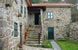 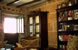 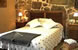 Capacidad: 5 habitaciones dobles. Servicios del establecimiento Comedor - bajo reserva | Parking | Tv.-DVD | Sala de estar | Cuna | Lavado de ropa | Jardín y Bosque | Bicicletas | Admisión de animales | Internet | T. de crédito. CABEZA DE BOI Casa de Aldea - Residencia Localización Cabeza de Boi, 12. Santa María de Armenteira - Meis (Pontevedra). C.P.: 36637 Teléfono: 986710853 | Fax: 986710853 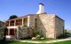 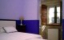 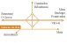 Capacidad: 4 habitaciones dobles. Servicios del establecimiento Admisión de animales | Aparcamiento | Bicicletas | Cama supletoria | Comedor | Derecho a cocina | Fumar en zonas restringidas | I. accesibles a minusválidos | Jardín / Huerta | Lavado ropa clientes | Salón estar | Tarjetas de crédito | Televisión común | Televisor en habitaciones. A MOROZA Casa de Aldea - Hospedería Localización A Moroza, 1. Santa María de Paradela - Meis (Pontevedra). C.P.: 36616 Teléfono: 986715580 | Fax: 986715582 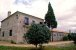 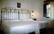 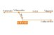 Capacidad: 6 habitaciones dobles. Servicios del establecimiento Aparcamiento | Bar | Biblioteca | Bicicletas | Comedor | Jardín / Huerta | Lavado ropa clientes | Reuniones directivos | Salón estar | Teléfono en habitaciones | Televisión común | Televisor en habitaciones. HOSPEDERÍA MONASTERIO DE ARMENTEIRA Vilar, 1 A. A Armenteira - Meis (Pontevedra) Teléfono: 986 71 83 00 / 627 09 76 96 | Fax: 986 71 05 95 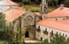 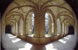 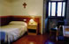 Capacidad: 14 habitaciones dobles e individuales. CASA DE ARCOS Casa Rural Arcos, 15, San Tomé de Nogueira - Meis (Pontevedra) Teléfono: 986 71 54 54 Capacidad: 3 habitaciones.
|
| Casa rural | Localización | Contactar | Monasterio | Club de golf | Rutas | Playas | Fiestas |